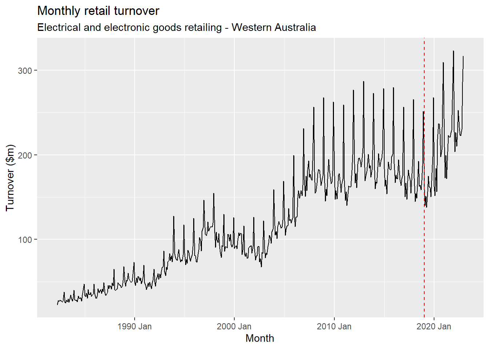
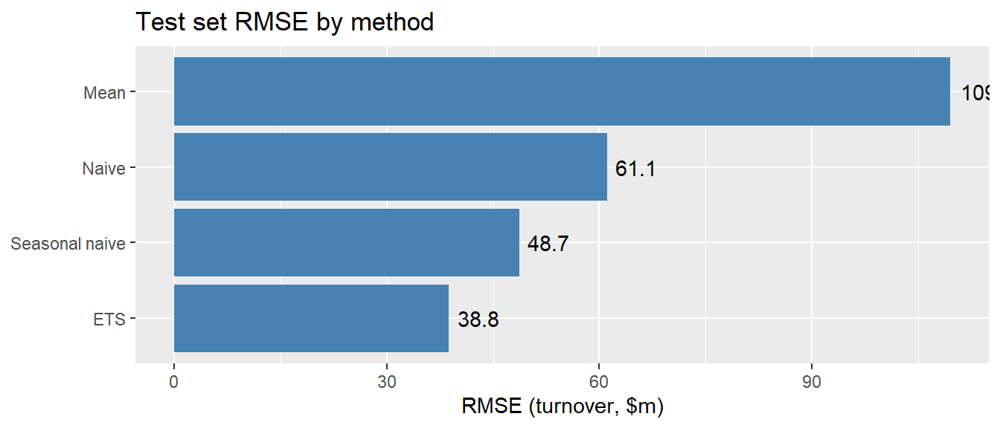
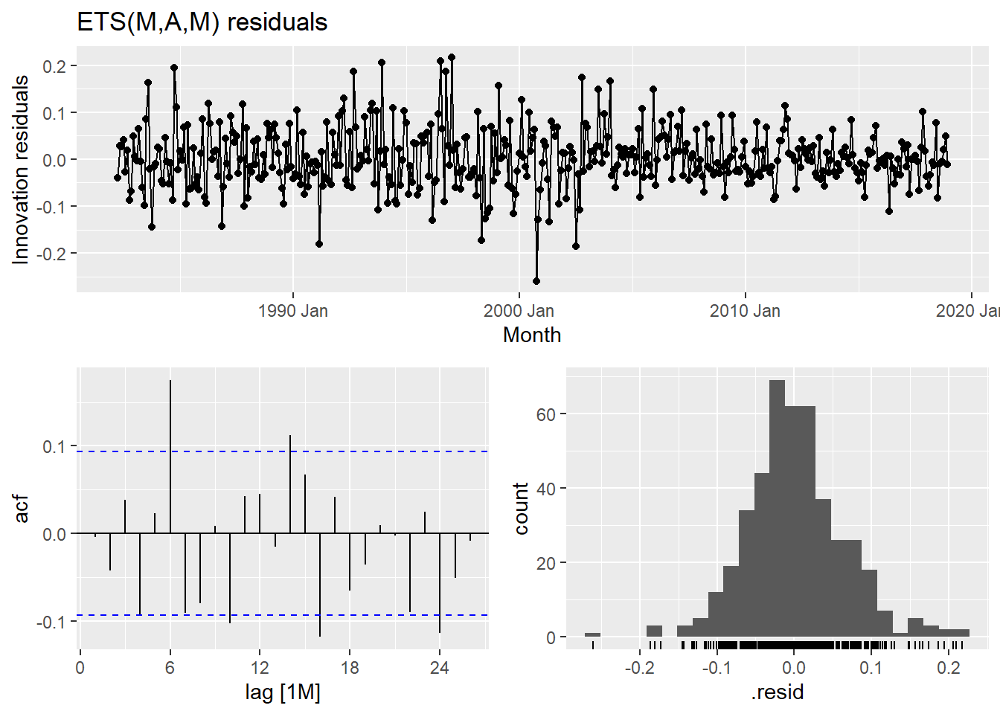
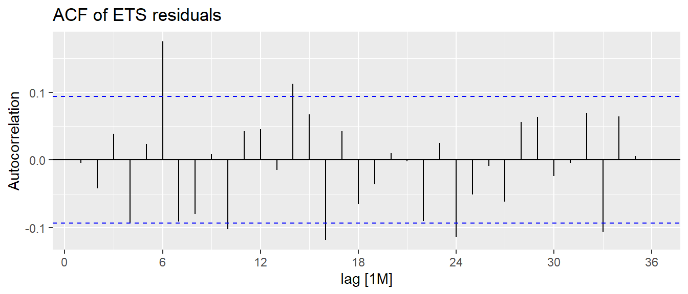

library(fpp3)Assignment 2: Evaluating Forecast Accuracy
ETS vs. benchmark methods, test-set and cross-validation approaches
Setup
get_my_data <- function(student_id) {
set.seed(student_id)
all_data <- readr::read_rds("https://bit.ly/monashretaildata")
while (TRUE) {
retail <- filter(all_data, `Series ID` == sample(`Series ID`, 1))
if (!any(is.na(fill_gaps(retail)$Turnover))) return(retail)
}
}
# Replace the argument with your student ID
retail <- get_my_data(35323876) |>
arrange(Month)
retail# A tsibble: 489 x 5 [1M]
# Key: State, Industry [1]
State Industry `Series ID` Month Turnover
<chr> <chr> <chr> <mth> <dbl>
1 Western Australia Electrical and electronic go… A3349660W 1982 Apr 22.5
2 Western Australia Electrical and electronic go… A3349660W 1982 May 27.8
3 Western Australia Electrical and electronic go… A3349660W 1982 Jun 26.7
4 Western Australia Electrical and electronic go… A3349660W 1982 Jul 28.2
5 Western Australia Electrical and electronic go… A3349660W 1982 Aug 27.4
6 Western Australia Electrical and electronic go… A3349660W 1982 Sep 27
7 Western Australia Electrical and electronic go… A3349660W 1982 Oct 25.5
8 Western Australia Electrical and electronic go… A3349660W 1982 Nov 27.4
9 Western Australia Electrical and electronic go… A3349660W 1982 Dec 37.6
10 Western Australia Electrical and electronic go… A3349660W 1983 Jan 25.8
# ℹ 479 more rowsThe data consist of 489 monthly observations of retail turnover for the Electrical and electronic goods retailing industry in Western Australia (Series ID A3349660W), covering 1982 April to 2022 Dec). The series is a single time series, so no key is required beyond the month index.
retail |>
autoplot(Turnover) +
labs(
title = "Monthly retail turnover",
subtitle = paste(retail$Industry[1], "-", retail$State[1]),
x = "Month",
y = "Turnover ($m)"
) +
geom_vline(xintercept = yearmonth("2019 Jan"), linetype = "dashed", colour = "red")
The series shows a clear upward trend together with a strong, stable monthly seasonal pattern (a pronounced December peak). A multiplicative ETS model is therefore a natural candidate.
Training and test sets
The test set is 2019 January to 2022 December (48 months, 4 years), and all remaining observations form the training set.
train <- retail |>
filter(Month <= yearmonth("2018 Dec"))
test <- retail |>
filter(
Month >= yearmonth("2019 Jan"),
Month <= yearmonth("2022 Dec")
)
cat("Training set:", format(min(train$Month)), "to", format(max(train$Month)), "->", nrow(train), "obs\n")Training set: 1982 Apr to 2018 Dec -> 441 obscat("Test set: ", format(min(test$Month)), "to", format(max(test$Month)), "->", nrow(test), "obs\n")Test set: 2019 Jan to 2022 Dec -> 48 obsFitting the models
An automatically selected ETS model is fitted to the training data along with three benchmark methods: the mean method, the naive method and the seasonal naive method.
fit <- train |>
model(
ETS = ETS(Turnover),
Mean = MEAN(Turnover),
Naive = NAIVE(Turnover),
`Seasonal naive` = SNAIVE(Turnover)
)
fit# A mable: 1 x 6
# Key: State, Industry [1]
State Industry ETS Mean Naive `Seasonal naive`
<chr> <chr> <model> <mode> <model> <model>
1 Western Australia Electrical and… <ETS(M,A,M)> <MEAN> <NAIVE> <SNAIVE>The automatically selected model is ETS(M,A,M): a multiplicative-error, additive-trend, multiplicative-seasonal ETS model (an “Holt-Winters” style model in error/trend/seasonal form). This was chosen by minimising the AICc over the space of permissible ETS models, and it matches the visual features of the data (upward trend plus multiplicative seasonality).
report(fit |> select(ETS))Series: Turnover
Model: ETS(M,A,M)
Smoothing parameters:
alpha = 0.5549694
beta = 0.0001358319
gamma = 0.1046641
Initial states:
l[0] b[0] s[0] s[-1] s[-2] s[-3] s[-4] s[-5]
25.88934 0.2853143 0.9345241 0.888239 0.9247219 1.341024 1.070553 0.9784982
s[-6] s[-7] s[-8] s[-9] s[-10] s[-11]
0.9465325 1.001509 0.9947688 0.9787658 1.045049 0.895816
sigma^2: 0.0042
AIC AICc BIC
4284.468 4285.915 4353.982 Forecasts on the test set
fc_test <- fit |> forecast(h = "4 years")
fc_test |>
autoplot(level = NULL) +
autolayer(train |> filter(year(Month) >= 2010), Turnover) +
autolayer(test, Turnover) +
labs(
title = "Forecasts for the 2019-2022 test set",
subtitle = "Historical data shown from 2010",
x = "Month",
y = "Turnover ($m)"
)
acc_test <- fc_test |>
accuracy(test) |>
select(.model, ME, RMSE, MAE, MAPE) |>
arrange(RMSE)
acc_test# A tibble: 4 × 5
.model ME RMSE MAE MAPE
<chr> <dbl> <dbl> <dbl> <dbl>
1 ETS 27.5 38.8 33.2 14.8
2 Seasonal naive 37.7 48.7 41.0 18.1
3 Naive -41.2 61.1 52.4 28.8
4 Mean 99.8 110. 99.8 45.0acc_test |>
ggplot(aes(x = RMSE, y = forcats::fct_reorder(.model, RMSE))) +
geom_col(fill = "steelblue") +
geom_text(aes(label = round(RMSE, 1)), hjust = -0.2) +
labs(
title = "Test set RMSE by method",
x = "RMSE (turnover, $m)",
y = NULL
)
Which method is best on the test set?
ETS gives the best forecasts, with an RMSE of 38.78. The rankings by RMSE are ETS (38.78), Seasonal naive (48.68), Naive (61.13), Mean (109.53).
This ordering is intuitive. The series has a strong positive trend, so the mean method performs badly (RMSE 109.53) because it forecasts the historical average of roughly 111 for every future month, when actual turnover in 2022 is around 238. The naive method is also poor (RMSE 61.13) because it repeats the final observed value and ignores both trend and seasonality. The seasonal naive method is a much stronger benchmark (RMSE 48.68) because it captures the seasonal pattern, and the ETS model improves on it by also modelling and extrapolating the trend.
Note also that the mean error (ME) is large and positive for the ETS, seasonal naive and mean methods, and negative for the naive method. In other words, the first three methods systematically under-forecast turnover over 2019-2022 (the naive method over-forecasts because it repeats the last observed value, which is far below the rising trend line). Actual turnover grew considerably faster than the training data implied, which is a property of this particular test period rather than of the models.
Residual diagnostics for the best model
We now check whether the residuals from the ETS model look like white noise, using a time plot, an ACF plot and a Ljung-Box test.
fit_ets <- fit |> select(ETS)
aug_ets <- fit_ets |> augment()
fit_ets |>
gg_tsresiduals() +
labs(title = "ETS(M,A,M) residuals")
aug_ets |>
ACF(.innov, lag_max = 36) |>
autoplot() +
labs(
title = "ACF of ETS residuals",
y = "Autocorrelation"
)
# The Ljung-Box degrees of freedom should equal the number of parameters
# estimated in the model.
n_params <- fit_ets |> tidy() |> nrow()
lb <- aug_ets |>
features(.innov, ljung_box, lag = 24, dof = n_params)
cat("Number of estimated ETS parameters (dof):", n_params, "\n")Number of estimated ETS parameters (dof): 17 cat("Number of residual autocorrelations tested:", 24, "\n\n")Number of residual autocorrelations tested: 24 lb# A tibble: 1 × 3
.model lb_stat lb_pvalue
<chr> <dbl> <dbl>
1 ETS 60.2 1.39e-10sig <- 1.96 / sqrt(nrow(train))
cat("\nApproximate 95% bound on residual autocorrelations:", round(sig, 4), "\n")
Approximate 95% bound on residual autocorrelations: 0.0933 sig_lags <- aug_ets |>
ACF(.innov, lag_max = 36) |>
as.data.frame() |>
as_tibble() |>
filter(abs(acf) > sig)
sig_lags |>
select(lag, acf)# A tibble: 6 × 2
lag acf
<cf_lag> <dbl>
1 6M 0.175
2 10M -0.102
3 14M 0.112
4 16M -0.118
5 24M -0.113
6 33M -0.106Are the residuals white noise?
No. The residuals do not appear to be white noise:
- The time plot of the innovation residuals shows several periods of volatility clustering (notably around the early 1990s and the Global Financial Crisis), and the spread of the residuals is not constant. For a correctly specified model the residual variance should be roughly constant in a multiplicative-error model.
- The ACF plot shows several autocorrelations that poke outside the 95% confidence bounds — lags 6M, 10M, 14M, 16M, 24M, 33M are significant. The ACF is not the flat, “all bars inside the bounds” pattern we would expect from white noise.
- The Ljung-Box test with lag 24 and
dof =17 gives a test statistic of 60.18 with a p-value of 1.39e-10. Since this p-value is far below 0.05, we reject the null hypothesis that the residuals are white noise.
The histogram of residuals is reasonably symmetric and centred on zero, so the problem is one of remaining autocorrelation rather than non-normality. The significant lags at 6, 14, 16 and 24 suggest some seasonal structure and possibly a structural break that the ETS model has not fully captured. This matters because it means the model’s prediction intervals should be treated with caution, and it is consistent with the under-forecasting (positive ME) observed on the test set.
Time-series cross-validation
We now evaluate the models using a rolling (expanding-window) forecast origin, with a minimum training sample of 15 years, a step size of 1 year and a forecast horizon of 5 years.
cv <- train |>
stretch_tsibble(.init = 15 * 12, .step = 1 * 12)
fold_windows <- cv |>
as_tibble() |>
group_by(.id) |>
summarise(
Fold_start = min(Month),
Fold_end = max(Month),
n_train = n(),
.groups = "drop"
)
cat("Number of cross-validation folds:", nrow(fold_windows), "\n")Number of cross-validation folds: 22 cat("Training sample grows from", fold_windows$n_train[1], "months to",
fold_windows$n_train[nrow(fold_windows)], "months\n\n")Training sample grows from 180 months to 432 monthsfold_windows# A tibble: 22 × 4
.id Fold_start Fold_end n_train
<int> <mth> <mth> <int>
1 1 1982 Apr 1997 Mar 180
2 2 1982 Apr 1998 Mar 192
3 3 1982 Apr 1999 Mar 204
4 4 1982 Apr 2000 Mar 216
5 5 1982 Apr 2001 Mar 228
6 6 1982 Apr 2002 Mar 240
7 7 1982 Apr 2003 Mar 252
8 8 1982 Apr 2004 Mar 264
9 9 1982 Apr 2005 Mar 276
10 10 1982 Apr 2006 Mar 288
# ℹ 12 more rowsfit_cv <- cv |>
model(
ETS = ETS(Turnover),
Mean = MEAN(Turnover),
Naive = NAIVE(Turnover),
`Seasonal naive` = SNAIVE(Turnover)
)
fc_cv <- fit_cv |> forecast(h = "5 years")acc_cv <- fc_cv |>
accuracy(train) |>
select(.model, ME, RMSE, MAE, MAPE, MASE) |>
arrange(RMSE)
acc_cv# A tibble: 4 × 6
.model ME RMSE MAE MAPE MASE
<chr> <dbl> <dbl> <dbl> <dbl> <dbl>
1 ETS 4.00 29.5 22.7 15.8 2.16
2 Seasonal naive 11.5 30.5 22.8 15.5 2.17
3 Naive 20.9 40.2 27.9 17.2 2.66
4 Mean 75.4 84.2 75.4 46.4 7.18Robustness check: per-fold RMSE
The accuracy() call above pools every forecast from every fold into a single RMSE. As a robustness check we also compute the RMSE within each fold and average across folds, so that each forecast origin contributes equally.
actuals <- as.data.frame(train) |>
select(Month, Turnover_actual = Turnover)
per_fold <- as.data.frame(fc_cv) |>
select(.id, .model, Month, .mean) |>
left_join(actuals, by = "Month") |>
filter(!is.na(Turnover_actual)) |>
group_by(.id, .model) |>
summarise(
RMSE = sqrt(mean((Turnover_actual - .mean)^2)),
n = n(),
.groups = "drop"
)
per_fold |>
group_by(.model) |>
summarise(
RMSE_mean_of_folds = mean(RMSE),
RMSE_median = median(RMSE),
Worst_fold = max(RMSE),
Best_fold = min(RMSE)
) |>
arrange(RMSE_mean_of_folds)# A tibble: 4 × 5
.model RMSE_mean_of_folds RMSE_median Worst_fold Best_fold
<chr> <dbl> <dbl> <dbl> <dbl>
1 Seasonal naive 25.0 19.0 62.2 8.06
2 ETS 25.2 21.0 58.4 5.94
3 Naive 37.1 33.0 65.9 16.2
4 Mean 80.1 86.1 104. 36.4 per_fold |>
ggplot(aes(x = .id, y = RMSE, colour = .model)) +
geom_line(linewidth = 0.8) +
geom_point(size = 1.5) +
labs(
title = "RMSE by cross-validation fold",
x = "Fold (forecast origin, 1 = earliest)",
y = "RMSE (turnover, $m)",
colour = "Method"
)
# Which ETS model is selected in each fold?
fold_models <- fit_cv |>
as.data.frame() |>
mutate(ETS_spec = purrr::map_chr(ETS, ~ fabletools::model_sum(.x))) |>
count(ETS_spec, name = "n_folds") |>
arrange(desc(n_folds))
fold_models ETS_spec n_folds
1 ETS(M,Ad,M) 16
2 ETS(M,A,M) 6# Convenience objects used in the discussion below.
fold_wide <- per_fold |>
select(.id, .model, RMSE) |>
tidyr::pivot_wider(names_from = .model, values_from = RMSE)
n_folds <- nrow(fold_wide)
n_ets_wins <- sum(fold_wide$ETS < fold_wide$`Seasonal naive`)
rmse_ets_fold <- mean(per_fold$RMSE[per_fold$.model == "ETS"])
rmse_snaive_fold <- mean(per_fold$RMSE[per_fold$.model == "Seasonal naive"])
rmse_test_ets <- acc_test$RMSE[acc_test$.model == "ETS"]
rmse_test_snaive <- acc_test$RMSE[acc_test$.model == "Seasonal naive"]
rmse_cv_ets <- acc_cv$RMSE[acc_cv$.model == "ETS"]
rmse_cv_snaive <- acc_cv$RMSE[acc_cv$.model == "Seasonal naive"]
pct_gain_test <- 100 * (1 - rmse_test_ets / rmse_test_snaive)
pct_gain_cv <- 100 * (1 - rmse_cv_ets / rmse_cv_snaive)
ets_spec_1 <- fold_models$ETS_spec[1]
n_1 <- fold_models$n_folds[1]
ets_spec_2 <- if (nrow(fold_models) > 1) fold_models$ETS_spec[2] else fold_models$ETS_spec[1]
n_2 <- if (nrow(fold_models) > 1) fold_models$n_folds[2] else fold_models$n_folds[1]
cat("Folds:", n_folds, "| ETS beats seasonal naive in:", n_ets_wins, "folds\n")Folds: 22 | ETS beats seasonal naive in: 10 foldscat("ETS worst/best fold RMSE:", round(max(per_fold$RMSE[per_fold$.model == "ETS"]), 1),
"/", round(min(per_fold$RMSE[per_fold$.model == "ETS"]), 1), "\n")ETS worst/best fold RMSE: 58.4 / 5.9 cat("ETS test-set advantage over seasonal naive:", round(pct_gain_test, 1), "%\n")ETS test-set advantage over seasonal naive: 20.3 %cat("ETS CV advantage over seasonal naive:", round(pct_gain_cv, 1), "%\n")ETS CV advantage over seasonal naive: 3.2 %fc_cv |>
filter(.model == "ETS") |>
autoplot(level = NULL) +
autolayer(train |> filter(year(Month) >= 1990), Turnover) +
labs(
title = "ETS forecasts from successive forecast origins",
x = "Month",
y = "Turnover ($m)"
)
Does cross-validation change the conclusion?
Using cross-validation, the RMSE results are:
| Method | Test set RMSE | CV RMSE (pooled) | CV RMSE (mean of folds) |
|---|---|---|---|
| ETS | 38.78 | 29.53 | 25.22 |
| Seasonal naive | 48.68 | 30.51 | 24.98 |
| Naive | 61.13 | 40.21 | 37.08 |
| Mean | 109.53 | 84.22 | 80.05 |
Yes, it does change the conclusion — at least partially.
- Under cross-validation the ranking of the worst methods is unchanged: the mean method is clearly the worst and the naive method is next worst.
- However, the gap between the best method (ETS) and the seasonal naive method collapses. On the test set, ETS beats seasonal naive by about 20%. Under pooled cross-validation, the advantage shrinks to only about 3.2%, and on the fold-averaged RMSE the two methods are effectively tied (ETS 25.22 vs seasonal naive 24.98). Indeed, in the per-fold comparison ETS beats seasonal naive in only 10 of 22 folds, and the fold-to-fold variation in RMSE (5.9 to 104.4) dwarfs the difference between the two methods.
- The ETS specification itself is not stable across folds — it is ETS(M,Ad,M) in 16 folds and ETS(M,A,M) in 6 folds — which further shows that the “best ETS model” is sensitive to the sample used to fit it.
So the strong claim from the test set (“ETS is clearly the best method”) is not robust: it is much safer to conclude that ETS and the seasonal naive method perform similarly, and that both are clearly better than the mean and naive methods.
Which method of evaluating accuracy is more reliable?
Time-series cross-validation is the more reliable approach, for several reasons.
It averages over many test periods, rather than relying on one. The test-set approach produces a single RMSE based on one particular 4-year window (2019-2022). Because forecasts are only accurate relative to the conditions in that window, the result is highly sensitive to the choice of split. Cross-validation here uses 22 different forecast origins, so a single unusual period cannot dominate the answer.
The particular test period is atypical. 2019-2022 contains the COVID-19 shock and a subsequent very strong rebound in retail turnover, during which every model systematically under-forecast. The test-set RMSE therefore largely measures how well a model coped with an unprecedented event, rather than its general forecasting ability. Cross-validation spreads the evaluation across ordinary periods as well.
Cross-validation uses a longer, more varied evaluation window (1997-2022), and can be designed to match the forecast horizon of interest. We evaluated a 5-year horizon, reflecting how the forecasts would actually be used, and every model was trained only on data available at each origin — so no future information leaks into the evaluation.
It exposes variability that a single number hides. The per-fold plot shows RMSE ranging from about 5.9 to 104.4 depending on the origin. This tells us the difference between ETS and seasonal naive is much smaller than the uncertainty in the estimate itself, which is exactly the kind of insight the single test-set number conceals.
That said, cross-validation is not perfect. Its folds overlap (successive training sets share data and successive forecast windows overlap in time), so the 22 error estimates are correlated and the effective sample size is smaller than the number of folds — the RMSE figures should not be over-interpreted. It is also computationally more expensive, and in this case later folds contribute fewer than 60 evaluation points because the 5-year horizon runs past the end of the data.
In this example the practical conclusion is that the test set overstates the case for ETS. The test set suggests ETS is substantially better than seasonal naive (RMSE 38.78 vs 48.68); cross-validation suggests the two are essentially equivalent (29.53 vs 30.51 pooled, 25.22 vs 24.98 fold-averaged). Since cross-validation averages over many origins and is far less sensitive to the luck of a single split, the cross-validated conclusion should be preferred — and it is reinforced by the residual diagnostics, which showed the ETS residuals were not white noise and hence that the model has not captured all of the structure in the data.